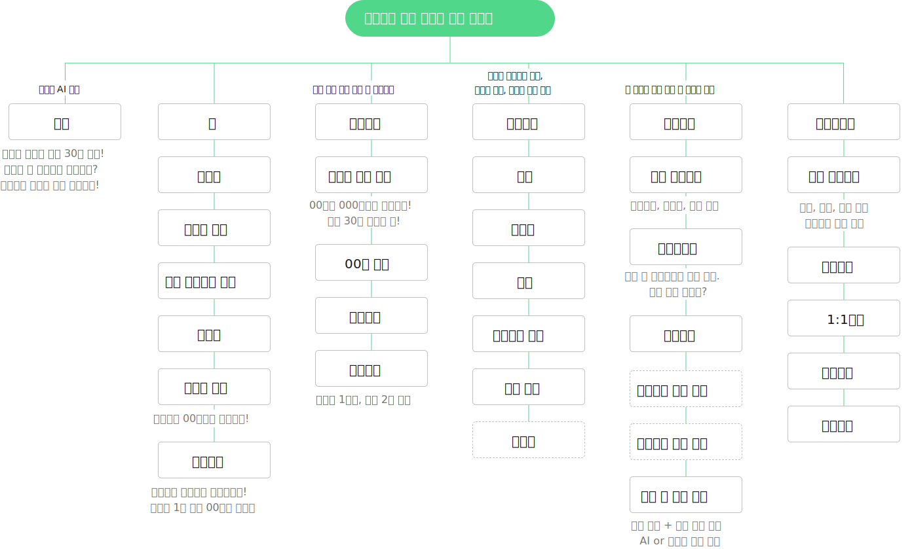

Personal overview
프로젝트의 시작은 암환자를 돌보는 과정에서 시작되었습니다. 병원 방문, 치료 병행보다 많은 혼동을 주었던 건 무엇을 먹을것인가 였습니다. 암 발병률 30~70%가 식품섭취에서 오기에 더 긴장하고 고민이 되었습니다. 식품섭취에 정확한 정보와 식단 구성과 주문이 가능한 서비스라면 조금이나마 부담이 줄어들거 같다는 판단에 이 프로젝트를 진행했습니다.Timeline
4 weeksMy role
100% personal projectScope
Desk research, User interviews, User journey map, Affinity diagramDesk Research
암질환 35~80%가 음식 관련, 완치후에도 식단관리 중요
User voice
환자도 완치자도 보호자도 음식을 챙겨먹기 힘들다
information architecture

Feature description 01

엄선된 건강한 음식만을 제공합니다
건강한 유기농 식자재 만을 제공하여 걱정없이 구입할 수 있게 하였으며 건강한 조리법도 함께 제공합니다.
건강한 조리법 제공과 조리법 그대로 재료 구매
평소 잘 몰랐던 건강한 조리법을 영상으로 제공, 조리법 그대로 제품을 구매할 수 있어 재료준비와 음식 조리에 고민을 덜어줍니다.
Feature description 02
위로와 응원이 되어주는 커뮤니티
암환자들의 완치후기, 치료후기 커뮤니티를 마련하여 암에 두려움보다 희망과 용기를 얻을 수 있습니다.

Feature description 03
나를 잘 알아주는 식단 서비스
즐겨먹는 음식과 알레르기 음식을 추가하여 나에게 꼭 맞는 식단을 구성할 수 있습니다.

Feature description 04
매일 건강한 식단 구성
영양소 별 식단을 구성하고 식단 그래도 식재료와 밀키트를 주문할 수 있어 식사의 부담을 줄입니다.